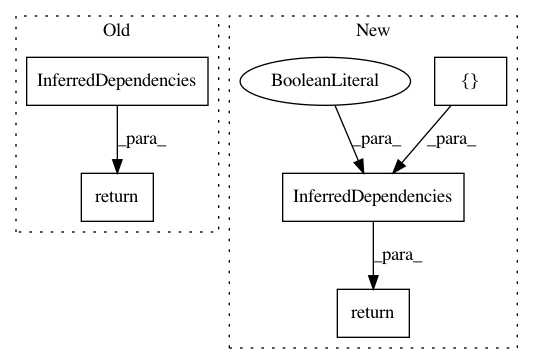

3c0332111aac4c67041f6ee1be6ca57ac6404a24,src/python/pants/backend/python/dependency_inference/rules.py,,infer_python_init_dependencies,#Any#Any#,123
Before Change
request: InferInitDependencies, python_inference: PythonInference
) -> InferredDependencies:
if not python_inference.inits:
return InferredDependencies()
// Locate __init__.py files not already in the Snapshot.
hydrated_sources = await Get(HydratedSources, HydrateSourcesRequest(request.sources_field))
extra_init_files = await Get(
After Change
request: InferInitDependencies, python_inference: PythonInference
) -> InferredDependencies:
if not python_inference.inits:
return InferredDependencies([], sibling_dependencies_inferrable=False)
// Locate __init__.py files not already in the Snapshot.
hydrated_sources = await Get(HydratedSources, HydrateSourcesRequest(request.sources_field))
extra_init_files = await Get(
In pattern: SUPERPATTERN
Frequency: 3
Non-data size: 5
Instances
Project Name: pantsbuild/pants
Commit Name: 3c0332111aac4c67041f6ee1be6ca57ac6404a24
Time: 2020-08-10
Author: 14852634+Eric-Arellano@users.noreply.github.com
File Name: src/python/pants/backend/python/dependency_inference/rules.py
Class Name:
Method Name: infer_python_init_dependencies
Project Name: pantsbuild/pants
Commit Name: 3c0332111aac4c67041f6ee1be6ca57ac6404a24
Time: 2020-08-10
Author: 14852634+Eric-Arellano@users.noreply.github.com
File Name: src/python/pants/backend/python/dependency_inference/rules.py
Class Name:
Method Name: infer_python_dependencies
Project Name: pantsbuild/pants
Commit Name: 3c0332111aac4c67041f6ee1be6ca57ac6404a24
Time: 2020-08-10
Author: 14852634+Eric-Arellano@users.noreply.github.com
File Name: src/python/pants/backend/python/dependency_inference/rules.py
Class Name:
Method Name: infer_python_conftest_dependencies